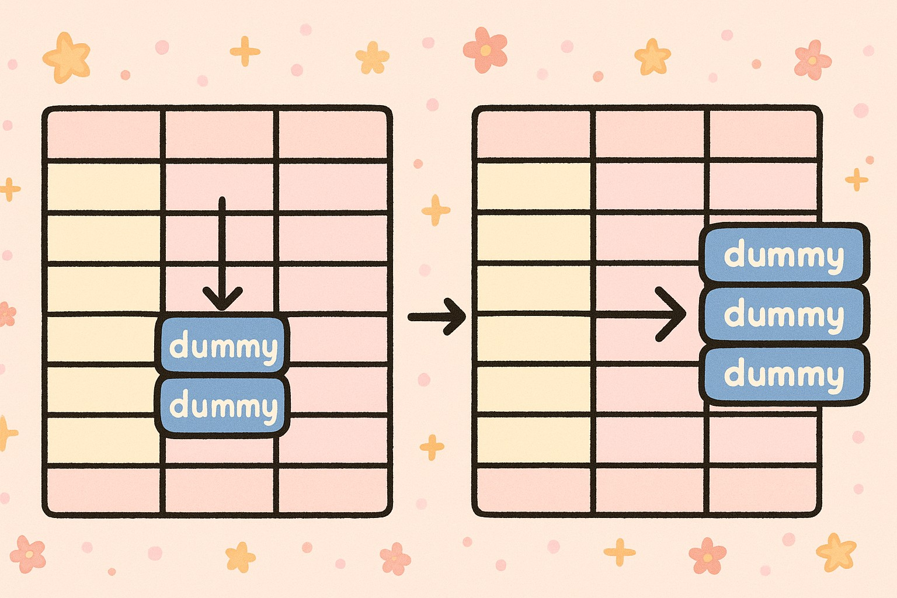

Two Simple Ways to Fill Dummy Data into the Right Rows
R
Tidyverse
Two Simple Ways to Fill Dummy Data into the Right Rows.
Published
November 12, 2025

Introduction
When preparing statistical summaries, we often need to create dummy data to maintain consistent structures.For example, ensuring all combinations of categorical variables appear in a summary table. This post introduces two simple approaches to fill dummy rows into your dataset using R and the tidyverse.
Example Dataset
Let’s start by creating a sample dataset:
library(tidyverse)
── Attaching core tidyverse packages ──────────────────────── tidyverse 2.0.0 ──
✔ dplyr 1.2.0 ✔ readr 2.2.0
✔ forcats 1.0.1 ✔ stringr 1.6.0
✔ ggplot2 4.0.2 ✔ tibble 3.3.0
✔ lubridate 1.9.5 ✔ tidyr 1.3.2
✔ purrr 1.2.0
── Conflicts ────────────────────────────────────────── tidyverse_conflicts() ──
✖ dplyr::filter() masks stats::filter()
✖ dplyr::lag() masks stats::lag()
ℹ Use the conflicted package (<http://conflicted.r-lib.org/>) to force all conflicts to become errors
👉 Now imagine we need to count records by treatment and sub, but we also want to include a new category — y1 — under sub, even if it doesn’t appear in the data. How can we achieve that?
Method 1 — Using crossing()
This approach manually builds a dummy dataset and merges it with the existing summary.
Steps:
1️⃣ Obtain unique treatment values.
2️⃣ Create all desired combinations using crossing().
3️⃣ Combine the dummy and original counts.
# Count the original combinationstemp2 <- temp1 %>%count(treatment, sub, name ="count")# Extract unique treatmentstemp2_nodup <- temp2 %>%arrange(treatment, sub, count) %>%group_by(treatment) %>%mutate(id =row_number()) %>%filter(row_number() ==1) %>%select(treatment) %>%ungroup()# Create dummy data with all sub categories, including y1dummy <-crossing( temp2_nodup,sub =c("x1", "x2", "x3", "y1"),count =0)# Combine and keep the latest record per combinationtemp3 <- temp2 %>%rbind(dummy) %>%arrange(treatment, sub, count) %>%group_by(treatment, sub) %>%mutate(id1 =row_number(), id2 =n()) %>%filter(row_number() ==n()) %>%select(-matches("^id")) %>%ungroup()temp3
This is a common requirement in data processing — ensuring all expected categories appear in your summaries or reports. Both crossing() and complete() from the tidyverse provide efficient ways to generate dummy data and maintain structural integrity.
Use crossing() when you need full control over combinations and want to manually build the structure.
Use complete() for a more concise, declarative approach that integrates naturally into tidy pipelines.
In short, crossing() gives you full control to build combinations manually, while complete() offers a cleaner, automatic way to fill missing categories in your data.